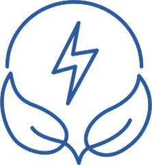
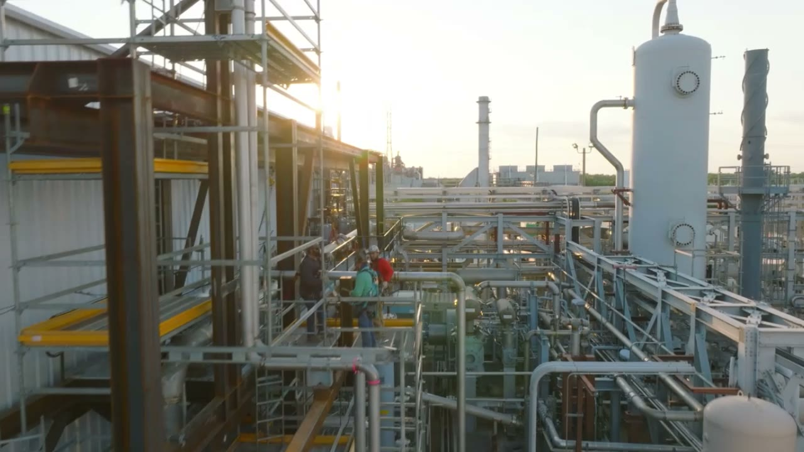
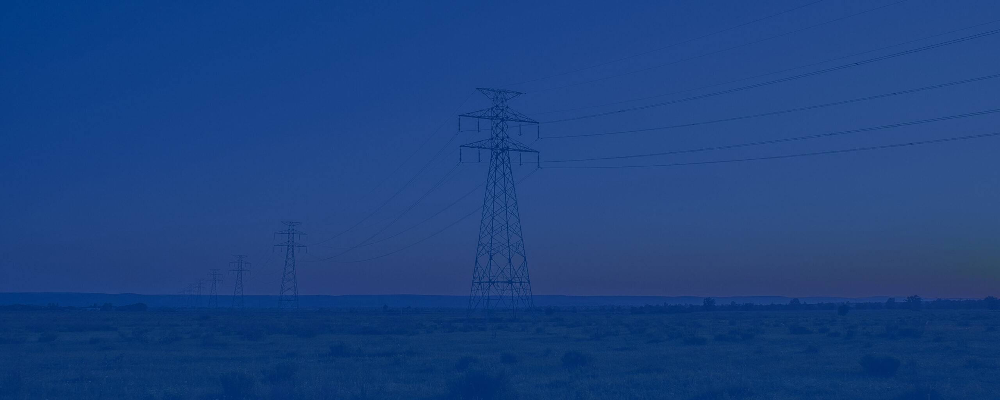
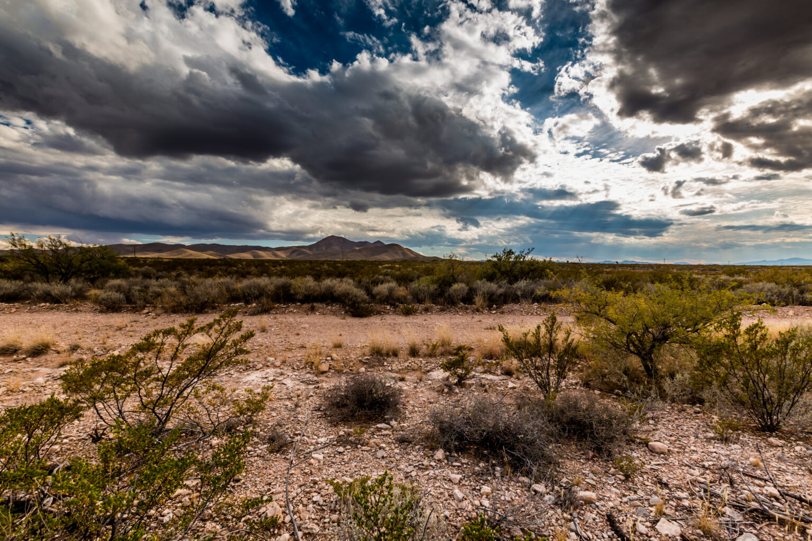
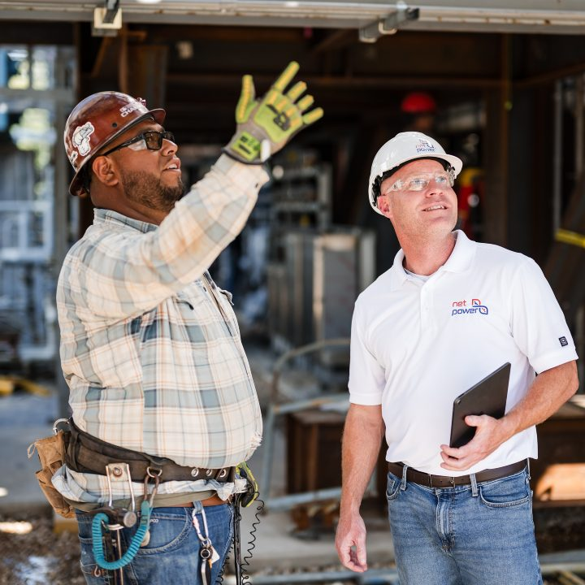
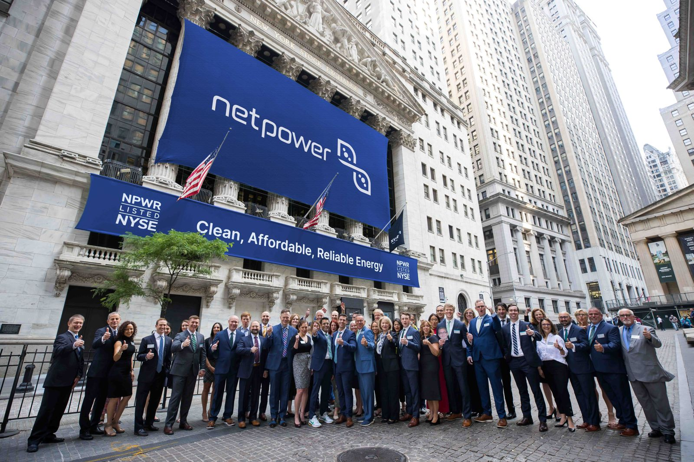

Clean
Plant design is carbon capture-ready, so a decarbonization pathway stays open.
Clean firm power · built for scale
Natural gas generation for customers who need power around the clock, with plants designed so carbon capture can follow.
Taken from Net Power’s public website. These describe contracted equipment and design intent, not live plant output.

Plant design is carbon capture-ready, so a decarbonization pathway stays open.
Built to provide 24/7 power with natural gas generation.
Designed to scale toward 1.X GW as the project advances.
01 — Our approach
Net Power puts the buyer’s hardest requirement first: as much reliable power as possible, with a practical route to decarbonization.
Natural gas plants are designed to be carbon capture and sequestration ready. Near-term projects deliver generation. Later phases can add capture without starting the site over.
Review capacity, technology, and grid information
02 — For commercial energy stakeholders
A proposed home for the questions offtakers, partners, and interconnection counterparties actually ask. Every figure below is either published by Net Power or clearly marked as a layout sample.
Plant capacity · published
~200 MW
Natural gas generation equipment contracted for the first phase of Project Permian.
The bar shows two different kinds of number side by side: equipment already contracted, and the scale the company says the design can grow toward. It is not a construction-progress meter.
Production performance · display sample
Generation technology · published specifications
Net Power describes its plants as carbon capture and sequestration ready. Capture is planned for later phases, so the site can serve power demand now and keep a decarbonization pathway in the design.
Grid interconnection · information architecture

Rows marked for an approved study stay empty on purpose. The page is ready for interconnection facts. It does not invent them.
Sustainability reporting · public resources
A library for stakeholders who need the decarbonization story, the filings, and the news in one place. Links go to Net Power’s own public pages.

03 — Project development
Permian Basin, Texas
The first planned powered-land project. Natural gas generation at the center, with the site and the engineering kept flexible so carbon capture can be incorporated later.
04 — Who we are
Net Power develops power generation projects for a grid that needs reliable, scalable supply. The near-term work is natural gas. The design leaves room for carbon capture after that.
The public record describes more than a decade of research, development, and execution. Supporting partners named by the company include Oxy and Constellation.


05 — Project development enquiry
For energy buyers, commercial partners, and counterparties looking at supply, interconnection, or a reporting question.